| いつ | すること | 画面 |
|---|---|---|
| 請求書が届いたら随時 | 請求書を渡す（経費も仕入も） | 経費／仕入（SMILE）の「請求書を渡す」・AI に渡す（撮る） |
| 10日払い・20日払いの前 | 経費の確認・承認 → 支払指図 → 決裁に回す | 経費 → 支払（決裁・出力） |
| 月初（SMILE を締める前） | 仕入の受入を取り込み、請求書と照合する | 仕入（SMILE）「締め前：受入を取り込む」 |
| SMILE を締めた後 | 4点を取り込み、支払一覧表と一致を確かめて確認OK | 仕入（SMILE）「締め後：4点を取り込む」 |
| 月末払いの前 | 支払指図 → 部門ごとに決裁 → 出力 | 支払（決裁・出力） |
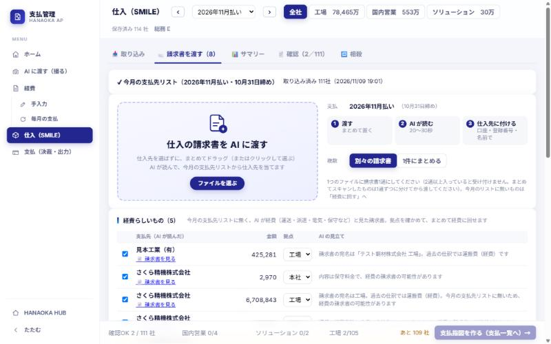
運送・派遣・電気・保守などの請求書は、「経費らしいもの」に並びます。拠点（工場／本社）を確かめて「経費に回す」を押すと、経費の確認待ちに並びます。
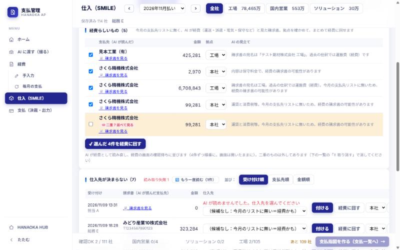
同じ相手・同じ金額の請求書には「⇔ 二重？並べて見る」が出ます。押すと2枚が横に並び、違う所に色が付きます。同じなら片方を「🗑 こちらを取り消す」。別の請求書なら「別の請求書（二重ではない）」を押します。
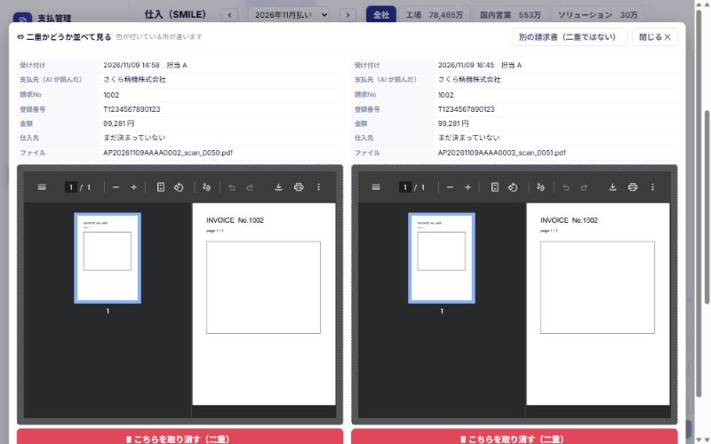
「📄 請求書を見る」→「✂ ページで分ける」で、1通ずつのページの範囲（例：1-10, 11-12）を入れて「分けて渡し直す」。分けた PDF は AI が1通ずつ読み直し、元の行は取り消されます。渡さないページ（別会社あてなど）は範囲に入れなければ渡しません。
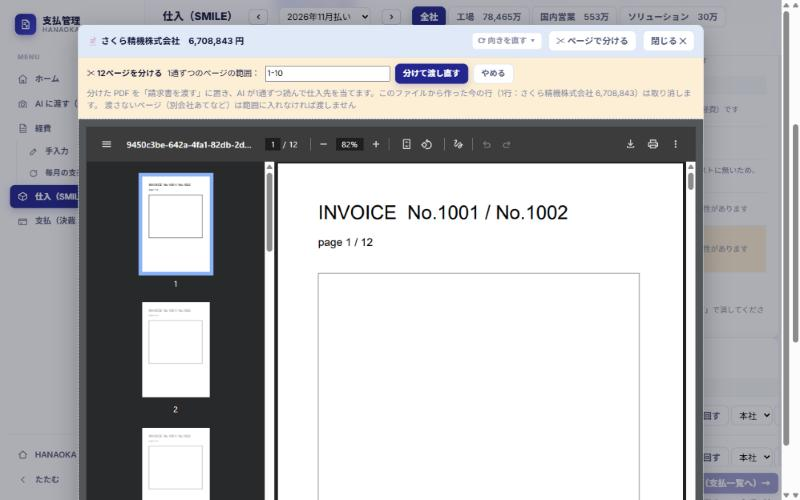
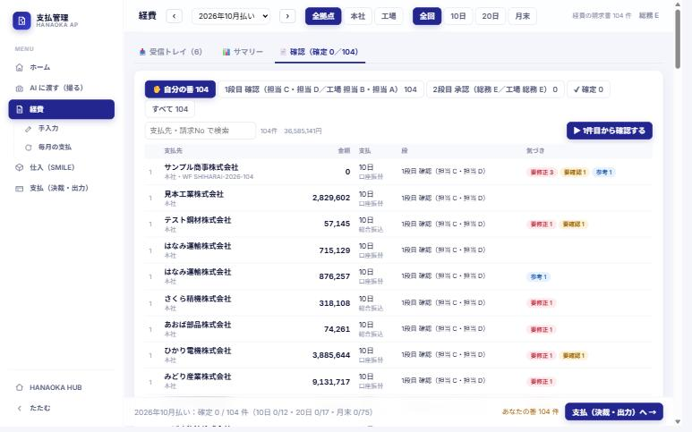
左に請求書、右に内容が出ます。上から順に見て「✔ 確定・次へ（Enter）」で次の請求書へ進みます。
| カード | 見ること |
|---|---|
| 支払先・金額 | 支払日・支払方法・拠点・前月との差 |
| 決裁の部門 | どの部門の決裁に入るか（工場／10日・20日は総務 など） |
| 振込先口座 | 口座が請求書どおりか（変わったときは強調して出ます） |
| 特記事項 | 初めての支払先・久しぶりの支払先など、いつもと違う支払。社長・室長の決裁画面にも出ます |
| 仕訳 | 科目・部門・税は AI が会計の実績から決めます。直すときは「✎ 編集」 |
| AI の気づき | 右側に並びます。確かめたら「確かめた」 |
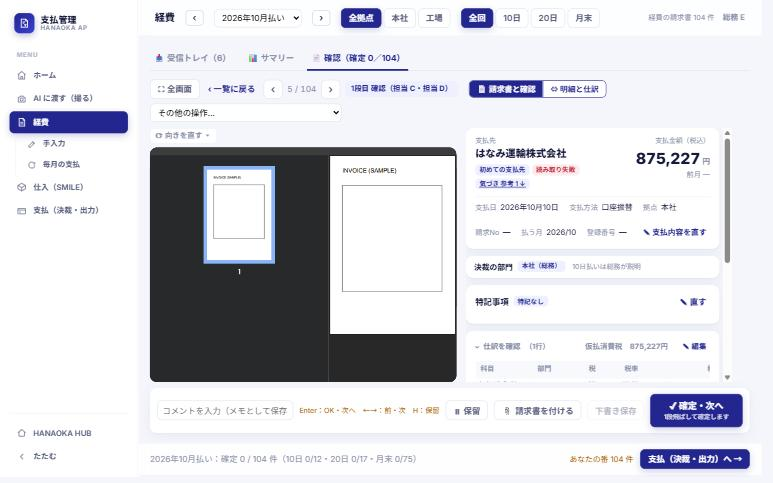
SMILE の仕入の数字（支払一覧表・月次支払明細表・月次受入リスト・仕入先マスタ）を取り込み、仕入先ごとに請求書と照合して支払額を固めます。
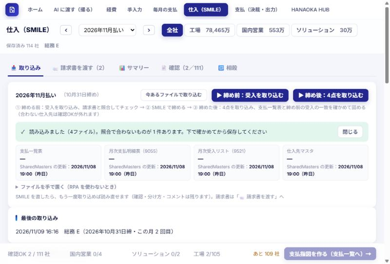
左に請求書、右に SMILE の額・請求書・判定が並びます。照合は SMILE の受入（税抜）⇔ 請求書（税抜）を本社・工場ごとに比べます。
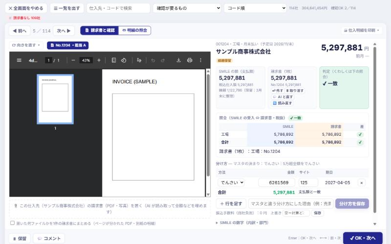
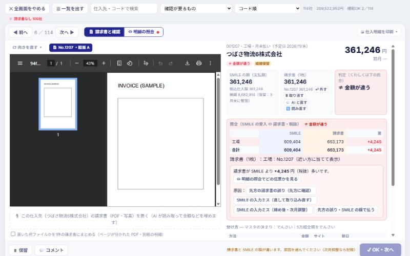
| 原因 | どうなるか |
|---|---|
| 先方の請求書の誤り（先方に確認） | 確認待ちにして、先方に確かめる |
| SMILE の入力ミス（直して取り込み直す） | SMILE を直して、もう一度取り込む |
| SMILE の入力ミス（締め後・次月調整） | 今月は請求書どおり払い、翌月の SMILE で精算 |
| 先方の誤り・SMILE の額で払う | SMILE の額で払う（先方了承済みなど） |
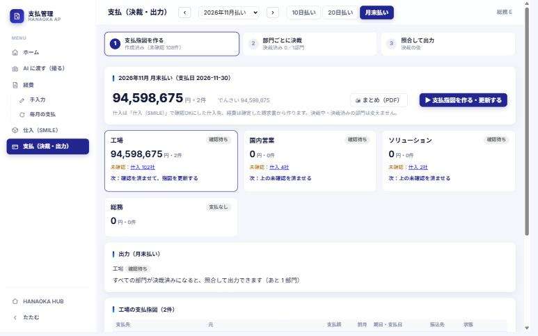
決裁に回すと、ワークフローの「支払決済」で 総務の最終確認 → 室長 → 社長 の順に回ります。決裁の画面では、サマリー（支払総額・特記事項・取引先一覧）と、1件ずつの明細を見ます。
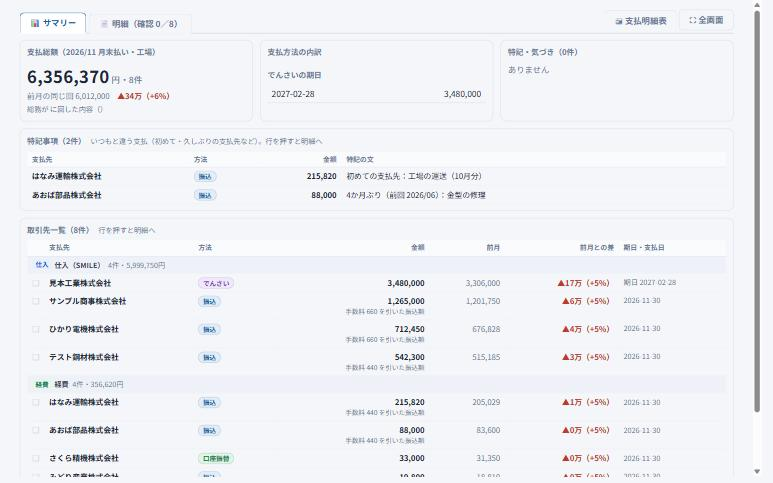
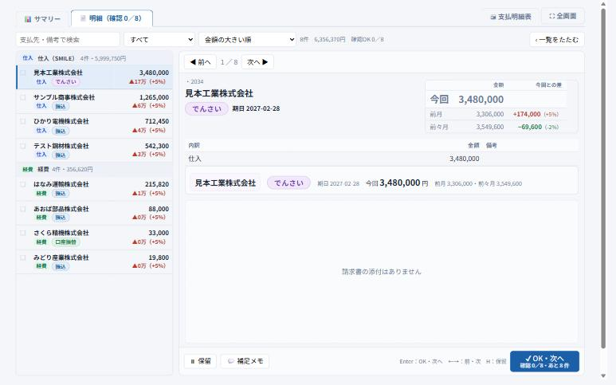
| 帳票 | どこから | 形 | 使い道 |
|---|---|---|---|
| 仕入明細（全部・本社・工場） | 仕入（SMILE）の確認・サマリー「🖨 仕入明細を印刷」 | PDF（印刷） | 仕入先ごとの受入と支払の明細 |
| 支払明細表（経費） | 経費のサマリー「🖨 支払明細表」（支払回ごと）・「📤 Excel」 | PDF・Excel | 今までの形の支払明細表（罫線・A4 横・押印欄つき） |
| 支払明細表（仕入） | 仕入（SMILE）のサマリー「🖨 印刷」 | PDF・Excel | 仕入の支払明細表（今までの形） |
| 支払明細表（決裁した内容） | 決裁画面の「🖨 支払明細表」 | PDF（印刷） | 決裁に回した内容を、経費・仕入の支払明細表の形で |
| 支払回のまとめ | 支払（決裁・出力）「🖨 まとめ（PDF）」 | 総合計・支払方法別・部門ごとの内訳と決裁の状態 | |
| 全銀（総合振込） | 支払（決裁・出力）③ 出力 | 銀行に取り込むファイル | 振込 |
| でんさい | 支払（決裁・出力）③ 出力 | でんさいに取り込むファイル | でんさいの発生記録 |
| SMILE 支払伝票 | 支払（決裁・出力）③ 出力 | SMILE に取り込むファイル | 仕入の支払を SMILE に戻す |
| 会計仕訳（経費） | 支払（決裁・出力）③ 出力 | 会計に取り込むファイル | 経費の仕訳 |
③ 出力は、その支払回のすべての部門が決裁済みになってから使えます。決裁した内容と違っていないかを確かめてから出力します。
| こんなとき | 直し方 |
|---|---|
| 間違えて置いた・二重に置いた | 🗑 取り消す（二重は「⇔ 並べて見る」から） |
| 仕入先が違う | 「付けた請求書」で「付け直す」（または ↩ 外す） |
| 読み取り失敗・「AI が読んでいます」のまま10分以上 | 🔄 もう一度読む |
| 読み取りが一部違う（金額・明細など） | 💬 AI と直す |
| 1つのファイルに請求書が2通入っていた | 📄 請求書を見る →「✂ ページで分ける」 |
| ページが横向き・逆さ | ⟳ 向きを直す |
| 経費の請求書を仕入に置いた | 「経費に回す」（拠点を選ぶ） |
| 確認OK・確定済みで直せない（🔒） | 確認の画面で「確認を外す」。わからなければ総務へ |
画面が真っ白で「AI の読み取り結果を取り込んでいます」と出ているときは、AI の結果を取り込み中です（1件数秒）。終わると画面が出ます。